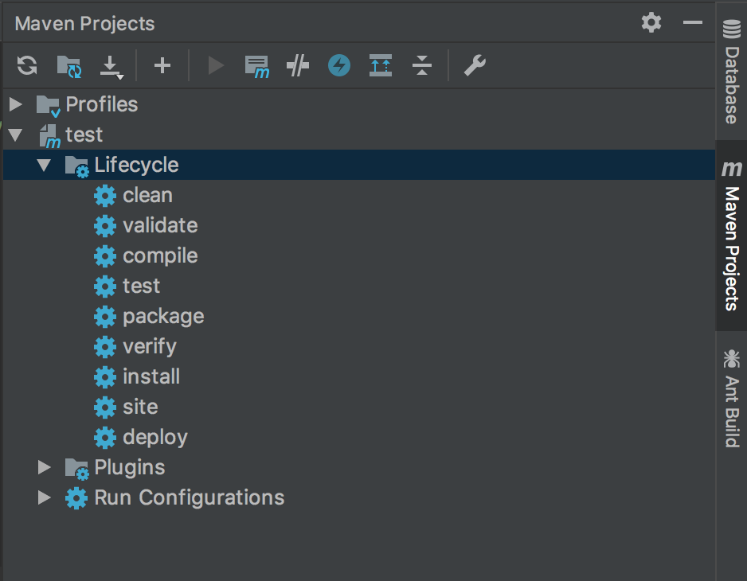

Nexus是Maven仓库管理器，也可以叫Maven的私服。Nexus是一个强大的Maven仓库管理器，它极大地简化了自己内部仓库的维护和外部仓库的访问。利用Nexus你可以只在一个地方就能够完全控制访问和部署在你所维护仓库中的每个Artifact。Nexus是一套“开箱即用”的系统不需要数据库，它使用文件系统加Lucene来组织数据。
1 下载并配置镜像
下载
1
2
3
4docker pull sonatype/nexus3
下载成功后可以查看镜像
docker images运行
1
2
3
4
5新建数据卷
docker volume create --name nexus-data
运行
docker run -d -p 8081:8081 --name nexus -v nexus-data:/nexus-data sonatype/nexus3参数-d为后台运行，-p将容器8081端口转发到主机8081上，-v将数据卷持久化。
打开网页127.0.0.1:8081，进入nexus系统，系统有两个默认账号admin和anonymous，admin的密码为admin123，具有全部的权限，anonymous作为匿名用户，只具有查看权限。
2 配置仓库
pepositories name属性说明
- maven-central：maven中央库，默认从https://repo1.maven.org/maven2/拉取jar
- maven-releases：私库发行版jar
- maven-snapshots：私库快照（调试版本）jar
- maven-public：仓库分组，把上面三个仓库组合在一起对外提供服务，在本地maven基础配置settings.xml中使用。
pepositories type属性说明
- group(仓库组类型)：又叫组仓库，用于方便开发人员自己设定的仓库
- hosted(宿主类型)：内部项目的发布仓库（内部开发人员，发布上去存放的仓库）
- proxy(代理类型)：从远程中央仓库中寻找数据的仓库（可以点击对应的仓库的Configuration页签下Remote Storage Location属性的值即被代理的远程仓库的路径）
- virtual(虚拟类型)：虚拟仓库
2.1 修改maven全局文件
settings.xml是针对全局所有项目的配置文件
1 | xml version="1.0" encoding="utf-8" |
配置生成后，通过mvn help:effective-settings命令
2.2 项目中配置pom.xml
1 | <repositories> |
3 上传包
上传maven包前需要对项目的pom.xml文件进行修改
1 | <distributionManagement> |
若需要上传源码，需要添加插件
1 | <build> |
3.1 利用mvn deploy命令上传
1 | mvn deploy -DskipTests |
3.2 利用IDEA插件进行上传

选择deploy进行上传